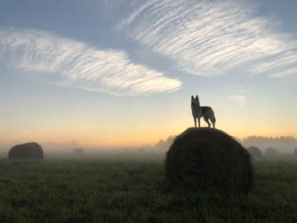

По опросам ВЦИОМ, 95% россиян мечтают куда-нибудь поехать,
но только 36% планируют провести отпуск в родной стране.
Мол, чего мы тут, дома, не видели? На самом деле, Россия — это целая вселенная
с ласковым морем юга, густыми лесами Саян и суровыми льдами плато Путорана. А ещё
увидеть все эти красоты можно без миллионов на счету, загранпаспорта и многочасовых
перелетов. Как, например, Вера Башмакова — смелая молодая мама, которая взяла в охапку
троих детей, усадила их в свою «Ладу» и проехала 20 тысяч километров по родной стране.
Мы выбрали и описали некоторые интересные места, достойные вашего отпуска.
Часовых поясов
11
Объектов природного наследия ЮНЕСКО
12
Объектов культурного наследия ЮНЕСКО
16
Природных заповедников
105
Аэропортов
241

Куршская коса
Здесь, посреди лесов и песчаных дюн,
вы сможете увидеть два водных горизонта — спокойного
Куршского залива с одной стороны и подёрнутого рябью волн
Балтийского моря с другой. Уникальная природная зона на краю
российского анклава.
На этом Калининградская область не заканчивается.
Для путешественника и исследователя там же по соседству — самая западная
точка России, Балтийская коса, — и немецкое наследие россыпи небольших приморских городов.
Атмосфера здешних мест исключает суету, окуная в спокойствие природы и запах стального,
прохладного моря.
Кольский
Почти весь полуостров находится за Полярным кругом.
Саамская тундра, от которой на юг — тайга, а на север — Ледовитый океан,
прикидывающийся Баренцевым морем.
Возможно, вы смотрели Звягинцева и даже
слышали историю арктического фестиваля в Териберке. Возможно, слово
«Хибины» не осталось под снегом школьных воспоминаний об уроках географии.
Возможно, вы не интересовались пронизывающей земную кору сверхглубокой скважиной,
а от апатитов вас давно накрывает апатия. Но ваша мечта увидеть северное сияние
начинает сбываться с билетом в Мурманск.
Алтай
Алтай — одно из красивейших мест в России.
В первую очередь из-за гор: если ехать вдоль хребта, вы увидите склоны,
усыпанные соснами, горные реки и озёра. А если вы откроете в автомобиле окна,
сможете познакомиться с невидимым чудом здешних мест — горным воздухом.
Климат на Алтае умеренный,
поэтому ехать сюда лучше всего летом. Так вы увидите всё разнообразие местной
флоры и фауны. По лесам Алтая бродят лоси, над хребтами летают орлы,
а на равнинах пасутся косули. И знаменитые манулы — тоже обитатели Алтайского края.
Зимний Байкал
Всем известен Байкал как крупнейшее озеро
в мире. Многие также знают, что это самый большой источник пресной
воды и одно из красивейших мест в России.
Конечно, это всё так. Но Байкал ещё идеальное место
для соревнований по скийорингу. Это такой вид спорта, когда лыжник привязывает себя
к мотоциклу, и тандем старается развить как можно бóльшую скорость
на льду. В марте 2019 года на фестивале «Байкальская миля»
был поставлен мировой рекорд — 197.011 км/ч.
Карелия
Сибирь заканчивается не на Урале, а в Карелии:
образующая тайгу сибирская лиственница не растёт западнее Водлозера.
Зато здесь она вымахивает на 30 метров — леса карельских национальных
парков из-за непроходимых болот никогда не знали топора. Некоторым соснам уже
больше чем полтысячелетия. Прикоснитесь к живому существу, видевшему солнце раньше,
чем увидал его Иван Грозный.
В девственном лесу на сотню километров не встретишь тропы. А на редких тропинках деревья
в паре метров от земли помечены медвежьими когтями. Чтобы все знали, кто тут хозяин.